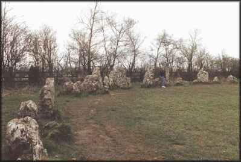
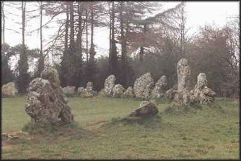
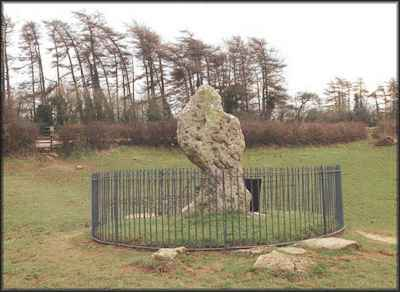
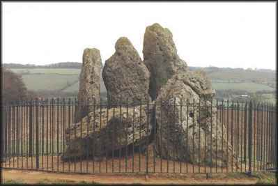

Rollright Circle
Rollright Circle

The Rollright Stones are our favourite stone circle! They 'speak' to us far more than do the great pillars of Stonehenge, partly of course because we can get to them. They have a 'homely' feel to them; they are 'friends'. Dowsing in the circle and around the other stones has been interesting and productive too.
Like many other stones and circles, the Rollrights have a legend of petrification; people, usually wrong-doers, being turned to stone as a punishment, and in the days when people believed in fairies and giants, goblins and witches, it did offer some explanation to them as to why they were there.
The circle of stones is on a long ridge about twenty miles NW of Oxford, between Little Rollright and Great Rollright, with the village of Long Compton about a mile to the North.
The stones are said to be uncountable, which in a way they are - some

are so small, and with others it is difficult to ascertain whether two pieces really belong to the same stone. Just outside the ring, on the opposite side of the road, is the King Stone, a magnificently shaped stone whose shape can indeed resemble a cloaked figure when viewed correctly. At the far edge of a field to the East are the ruins of a portal dolmen, known as the Whispering Knights, a truly lovely grouping of stones, supposed to be the traitorous Knights, plotting against their King.There were at one time, numerous round barrows in the area, which have unfortunately been ploughed out by the farmers; these do suggest that the area was once a Bronze Age burial centre.
The stones were probably erected about 3000 BC, were still in use in the Bronze Age, and excavations have shown some activity in Roman times.
We first hear of it officially in the early fourteenth cantury in the writings of a cleric in Cambridge, when he mentions the stones, but declared that there was no knowledge of when, or by whom, or for what purpose they were erected. The petrification legend was not mentioned until 1586, when they were said to be men turned to stone. By 1610, however, they had become a King, five Knights and an army!
There are legends illustrating how calamitous trying to remove a stone could be! A farmer named Boffin needed eight horses to drag away the King Stone, returning it easily with just one horse after it had shifted from its new position in the night. Boffin was drowned in his own well by the Roundheads. Two men were killed in the carting away of one stone just the mile away to Little Rollright.
By the eighteenth century, the petrification legend had become fully fledged. A witch met the King, bent on conquering England, and in theory promised him easy success, with the words:
"Seven long strides shalt thou take,
And if Long Compton thou canst see
King of England thou shalt be."
But the mound prevented him from seeing Long Compton, and so the witch,
cackling, continued:
"As Long Compton thou canst not see
King of England thou shalt not be.
Rise up stick and stand still stone
For King of England thou shalt be none.
Thou and thy men bleak stones shall be,
And I myself an eldern tree"
By the nineteenth century, naturally for that time, the stones had accumulated marriage and fertility legends. Running round the stones naked would enable unmarried women to see their future husbands, and rubbing their naked breasts against the stones enabled childless women to conceive.
Much work has been done in the nineteenth and twentieth centuries examining the stones, their alignments, their possible astronomical significance and their relatioship to other stone circles. These are summarised in issue number two of the Right Times, the magazine of The Friends of the Rollright Stones, which if you join the 'Friends', you could possibly get a copy of!!
Do visit the Rollrights if you are in the area - you will enjoy the experience.


King Stone

Whispering Knights
